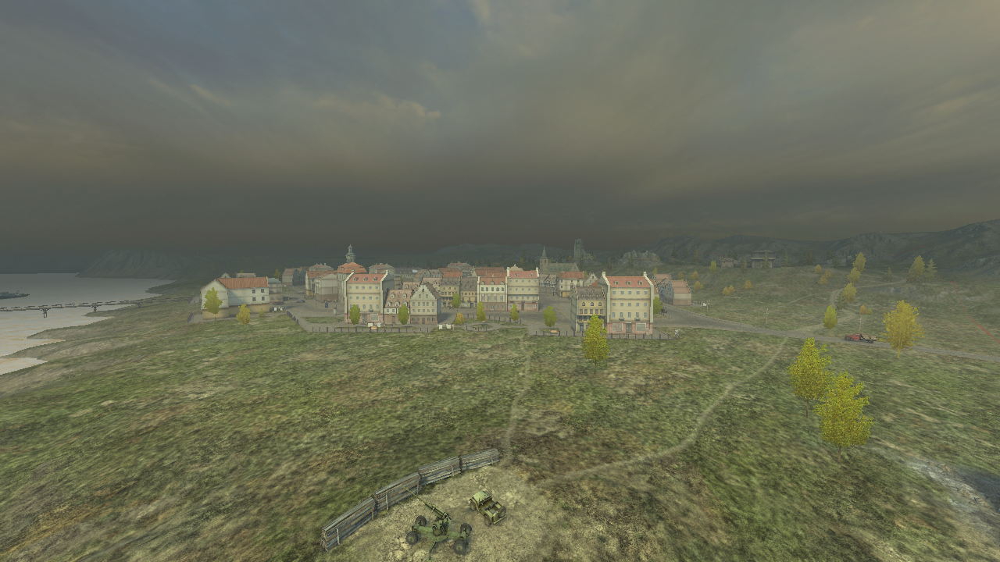

Миддлбург
11.04.2021

Командиры!
Совсем скоро в серию Blitz Classic прибудет старый добрый Миддлбург, и предлагаю уже сегодня посетить его!
С момента переработки этой карты прошло почти пять лет, многие игроки до сих пор хотят прокатится по старому Миддлбургу, так... Почему бы и нет? Мод на старый визуал готовится к выходу, это будет отличная возможность вспомнить теплый 2014-2016 год. Удачи на полях сражений!